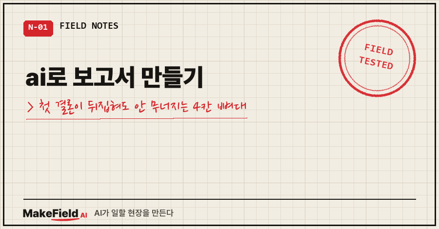
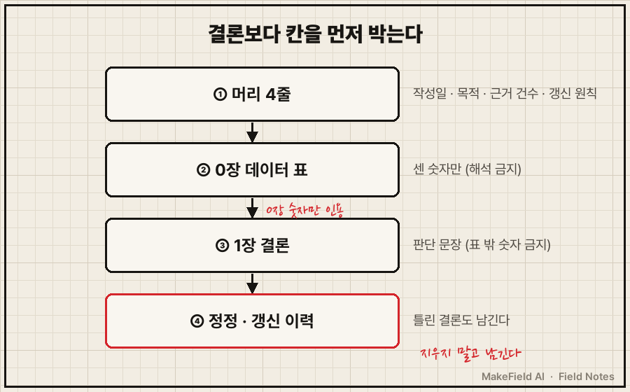
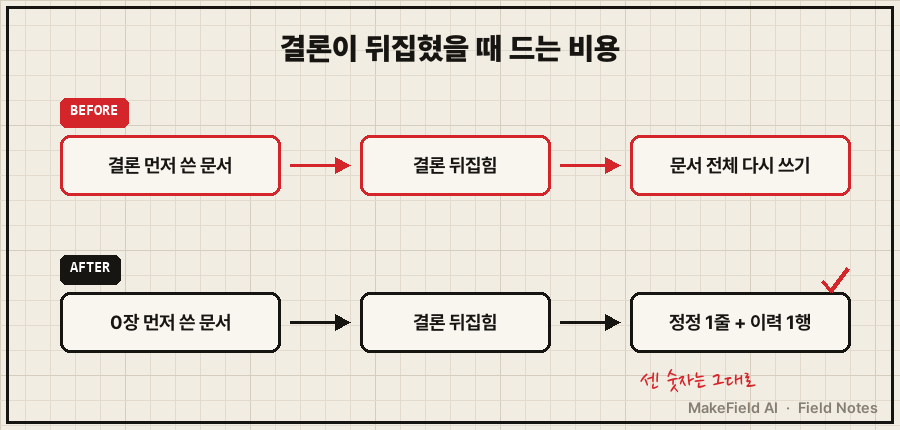
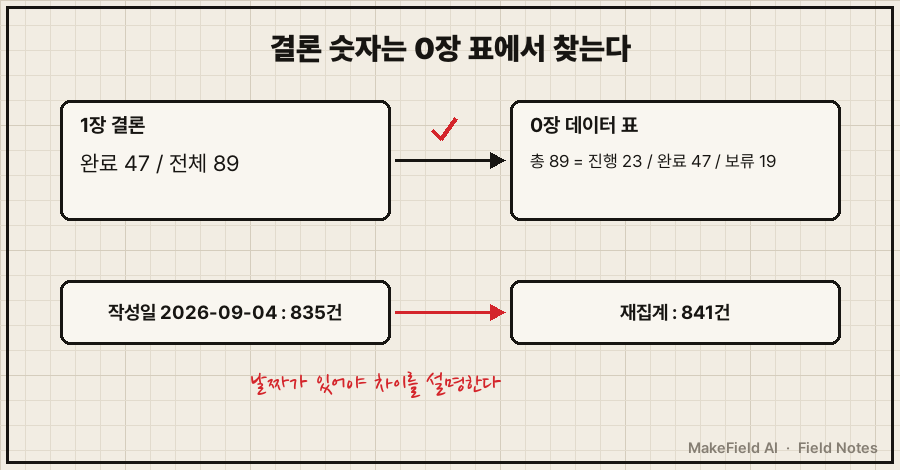

ai로 보고서 만들기, 제가 해 보고 남긴 답은 이거예요. 결론부터 쓰게 하지 말고, 문서 뼈대를 먼저 4칸으로 박아 두는 것.
AI로 보고서를 만들 때는 ①머리 4줄(작성일·목적·근거 건수·갱신 원칙) ②0장 데이터 표 ③결론 ④정정·갱신 이력 순서로 칸을 먼저 정하고, 결론에는 0장 표에 있는 숫자만 쓰게 하면 결론이 뒤집혀도 문서를 다시 쓸 필요가 없습니다.
저는 15년 현장에서 일하면서 "숫자엔 날짜와 조건이 붙어야 한다"를 몸으로 배운 엔지니어예요. 그런데 정작 제 기록으로 보고서를 만들 땐 그 순서를 거꾸로 했습니다. 2026년 9월 4일 일이고, 아래 뼈대는 그날 남긴 보고서의 실제 구조예요.
1. 이런 보고서가 먼저 나와요
반년 넘게 쌓인 작업 기록 파일 835건과 안건 목록 89건을 AI에 넘기고, 제 일하는 습관을 진단하는 보고서를 써 달라고 했어요.
첫 답의 핵심 문장은 이랬습니다.
완료율 53%이니 예전 진단은 틀렸다.깔끔하죠. 결론이 있고, 숫자도 있고요.
그런데 이 한 줄만 보면 53%가 몇 건 중 몇 건인지, 언제 센 숫자인지 알 수가 없어요. 읽는 사람은 검산할 방법이 없죠. 결론 한 줄이 먼저 오는 보고서는 대개 이 모양으로 시작합니다.
2. 원인: 결론이 근거보다 먼저 쓰였어요
이 53%가 왜 틀렸는지는 부모 글에 자세히 썼어요. 짧게 말하면 완료 47건과 보류 19건이 애초에 성질이 다른 일이라, 비율 자체가 아무것도 설명하지 못했습니다.
여기서 보고서 쪽 교훈은 따로 있어요. 결론이 먼저 쓰인 문서는 결론이 뒤집히면 통째로 무너집니다. 근거가 결론 문장 속에 녹아 있어서, 결론을 지우면 근거도 같이 사라지거든요.
그날 최종으로 남긴 보고서는 근거를 결론에서 떼어 내서 따로 칸을 준 구조였어요. 그 덕을 바로 뒤에서 봤습니다.
3. 4칸 뼈대를 먼저 박는 순서
실제 보고서 맨 위는 이렇게 생겼어요(자료 이름만 일반화했습니다).
# (보고서 제목)
- 작성: 2026-09-04 / 목적: (이 보고서로 정할 것 한 줄)
- 근거: 작업 기록 835건, 안건 목록 89건
- 갱신 원칙: 최신 데이터가 기존 결론과 어긋나면 최신 쪽 우선
## 0. 전수 데이터
| 항목 | 값 |
|---|---|
| 안건 목록 | 총 89건 = 진행 23 / 완료 47 / 보류 19 |
## 1. 결론
## 갱신 이력
| 날짜 | 변경 |같은 뼈대를 AI에게 시키려면 지시문은 이 정도면 됩니다.
보고서를 아래 순서로 써라.
1) 맨 위 4줄: 작성일, 목적, 근거(자료 이름과 건수), 갱신 원칙
2) 0장: 근거 자료를 센 표만. 해석과 결론은 쓰지 마라
3) 1장 결론: 0장 표에 있는 숫자만 인용해라. 표에 없는 숫자는 쓰지 마라
4) 결론을 바꿀 땐 지우지 말고 정정 각주 1줄과 갱신 이력 1행을 남겨라- 머리 4줄: 작성일이 없으면 나중에 숫자가 달라졌을 때 누가 틀렸는지 못 가려요
- 0장 데이터 표: 해석 없이 센 것만. 결론과 섞지 않는 게 핵심이에요
- 결론: 0장 숫자만 가져다 씁니다
- 정정·갱신 이력: 틀린 결론을 지우지 않고 기록으로 남기는 칸이에요

그림을 말로 옮기면, 문서를 위에서부터 머리 4줄·0장 데이터·결론·정정 이력 네 칸으로 나누고, 결론은 바로 위 0장 표에서만 숫자를 가져온다는 뜻이에요.
Word에서 Copilot을 쓰신다면 프롬프트 창에 /를 치고 근거 파일을 골라 지정할 수 있어요. 그러면 AI가 어느 파일을 근거로 썼는지가 분명해집니다(→ https://support.microsoft.com/en-us/office/start-a-draft-with-copilot-in-word-069c91f0-9e42-4c9a-bbce-fddf5d581541). 단 이 기능은 Microsoft 365 구독이나 Copilot 라이선스가 있어야 써요. 다른 대화형 AI라면 파일을 첨부하고 위 지시문을 그대로 붙이시면 됩니다.
4. 결론이 뒤집혔을 때 실제로 한 일
보류 목록을 한 줄씩 읽어 보니 53% 결론이 정반대로 뒤집혔어요(과정은 부모 글에 있어요). 그때 문서를 새로 쓰지 않았습니다. 결론 칸 밑에 이 한 줄만 붙였어요.
⚠️ 2026-09-04 1차 분석에서 "완료율 53%이니 예전 진단은 틀렸다"고 판단했으나,
표본 오판이었음. 정정 기록.갱신 이력 표에도 "1차 분석의 판단을 표본 오판으로 정정" 한 행을 넣었고요. 0장 데이터 표는 손댈 게 없었어요. 틀린 건 해석이지 센 숫자가 아니었으니까요.

결론 먼저 쓴 문서는 결론이 바뀌면 처음부터 다시 써야 하고, 0장을 먼저 쓴 문서는 정정 한 줄과 이력 한 행이면 끝난다는 비교예요.
5. 다 만들었으면 이렇게 확인해요
확인은 두 가지면 됩니다.
- 결론 문장의 숫자를 하나씩 0장 표에서 찾는다. 표에 없는 숫자가 결론에 있으면 그 문장은 AI가 만든 거예요
- 근거 줄의 건수를 지금 다시 센다. 제 경우 보고서엔 835건인데, 나중에 다시 세니 841건이었어요. 작성일이 머리에 있어서 "그사이 늘었다"로 바로 정리됐습니다. 작성일이 없었으면 어느 쪽이 틀렸는지부터 따졌겠죠..
Microsoft도 Copilot으로 만든 초안은 "사실, 숫자, 인용, 이름 등을 검토하고 확인하라"고 공식 안내에 적어 두고 있어요(→ https://support.microsoft.com/en-us/office/start-a-draft-with-copilot-in-word-069c91f0-9e42-4c9a-bbce-fddf5d581541). 0장 표가 있으면 그 확인이 대조 작업 한 번으로 줄어듭니다.

여러분이 AI로 만든 보고서, 맨 위에 "언제 센 몇 건"이 적혀 있나요?
같은 증상, 다른 경우
- 숫자 비율이 왜 거짓말을 했는지, 분석 지시 순서 → AI 기록 분석, 완료율 53%만 보고 정반대 결론
- 틀린 데는 없는데 밋밋한 보고서가 나올 때, 요청문 4덩어리 → 챗GPT 보고서 작성, 요청문에 넣을 4가지
- 다 쓴 AI 보고서를 다른 눈으로 검증하는 법 → AI가 쓴 보고서 검증
자주 묻는 질문
Q. ai로 보고서 만들기, 결론을 맨 앞에 두면 안 되나요?
읽는 순서로는 결론이 앞에 와도 돼요. 제가 바꾼 건 쓰는 순서예요. 0장 표를 먼저 채우고 결론을 나중에 쓰게 하면, 결론 문장이 표 밖 숫자를 끌어올 틈이 줄어요.
Q. 정정 기록은 왜 지우지 않나요?
지우면 같은 판단을 또 하게 돼요. 저도 "53%면 괜찮다"는 결론이 듣기 좋아서 더 안 따졌거든요. 틀린 결론이 문서에 남아 있으면 다음에 같은 숫자가 나왔을 때 바로 멈출 수 있어요.
Q. 자료가 몇 건 안 되는 짧은 보고서에도 필요한가요?
머리 4줄만은 꼭 넣으시길 권해요. 작성일과 근거 건수 두 줄만 있어도, 나중에 숫자가 달라졌을 때 다툼이 확 줄어요.
AI로 만든 보고서 뼈대와 제가 틀렸던 판정 기록은 makefield.ai에 모아 두고 있어요.
출처
- Microsoft 지원, Draft and add content with Copilot in Word (2026-10 확인) → https://support.microsoft.com/en-us/office/start-a-draft-with-copilot-in-word-069c91f0-9e42-4c9a-bbce-fddf5d581541
태그: #AI로보고서만들기 #AI보고서 #AI보고서작성 #AI보고서구조 #보고서뼈대 #보고서양식 #코파일럿워드 #Copilot #AI문서작성 #AI결과물검증 #AI숫자검증 #보고서잘쓰는법 #직장인AI #AI오답노트 #MakeFieldAI